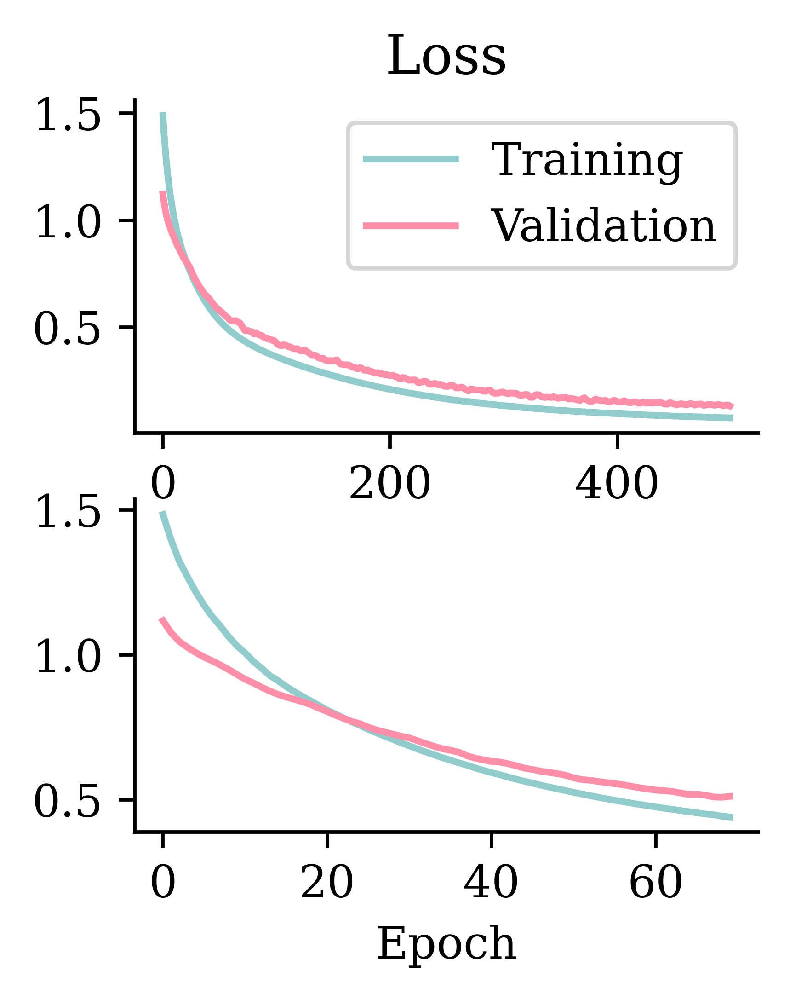
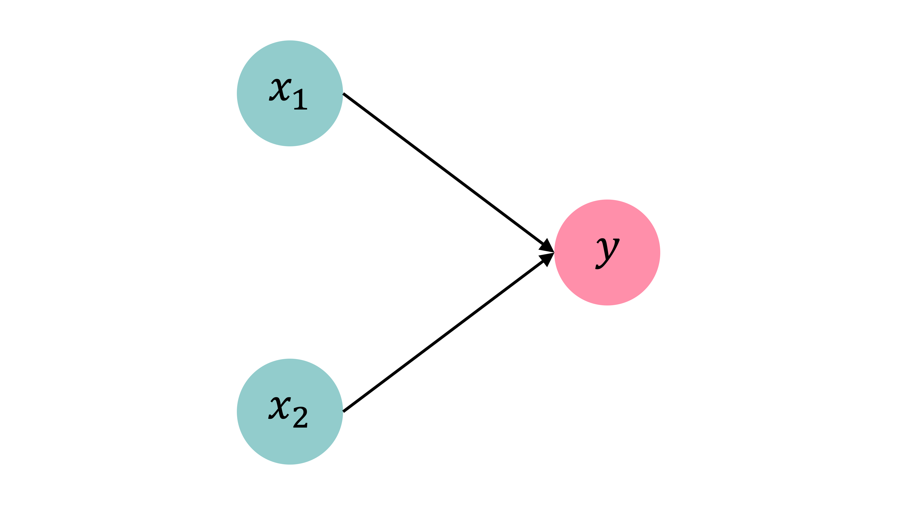
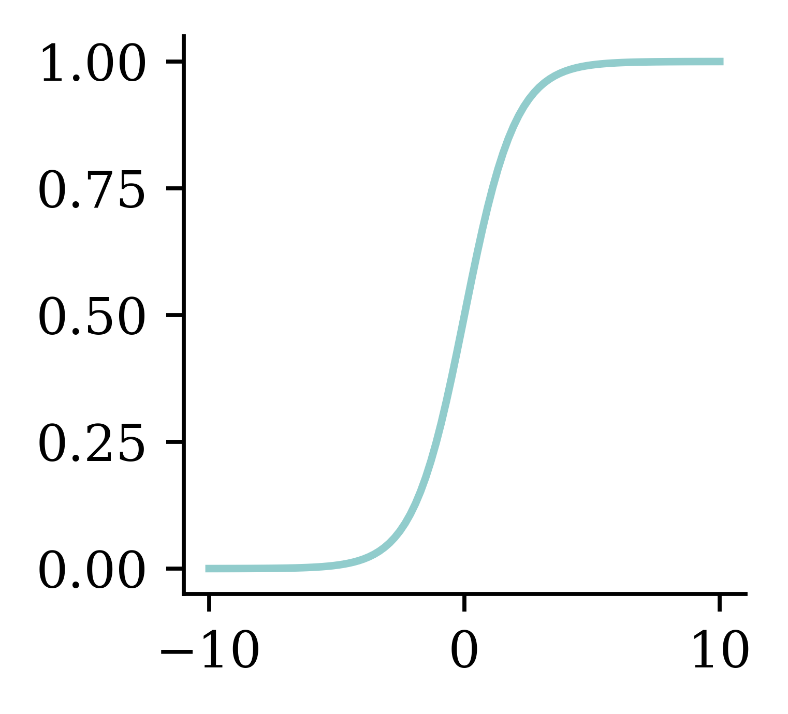
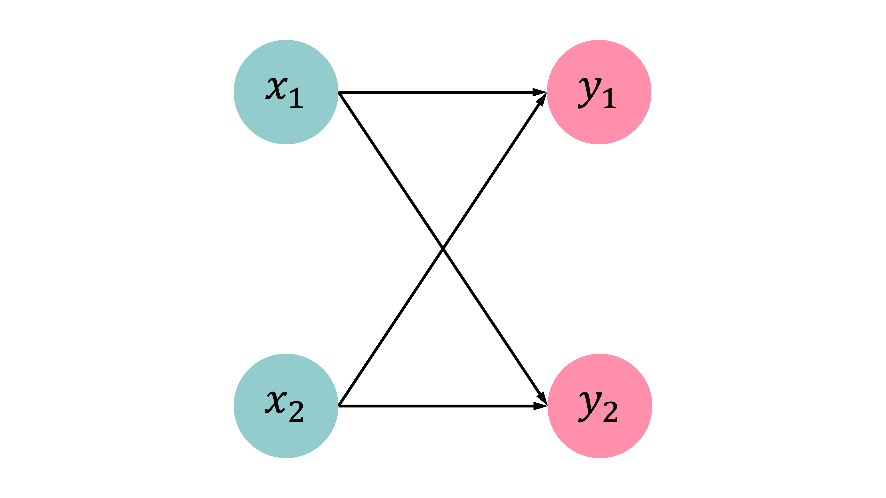

import random
from pathlib import Path
import matplotlib.pyplot as plt
import numpy as np
import pandas as pd
import seaborn as sns
from keras.models import Sequential
from keras.layers import Dense, Input
from keras.callbacks import EarlyStopping
from sklearn.datasets import load_iris
from sklearn.model_selection import train_test_split
from sklearn.preprocessing import OneHotEncoder, StandardScaler
from sklearn.compose import make_column_transformer
from sklearn.impute import SimpleImputer
from sklearn.metrics import confusion_matrix, RocCurveDisplay, PrecisionRecallDisplay
from sklearn import set_config
set_config(transform_output="pandas")Classification & Optimisation
ACTL3143 & ACTL5111 Deep Learning for Actuaries
Overview
In these slides, we’ll start by giving some demonstrations of training classification models that: 1) predict a binary outcome, then 2) predict a categorical outcome with > 2 options or levels.
Next, we’ll step into the maths of how these classification models make predictions, then go look at the high-level ideas of how to “train” them, then finally look at the maths of this training process.
Imports needed for these demos
Binary Classification
Stroke Prediction Data description
id: unique identifiergender: “Male”, “Female” or “Other”age: age of the patienthypertension: 0 or 1 if the patient has hypertensionheart_disease: 0 or 1 if the patient has any heart diseaseever_married: “No” or “Yes”work_type: “children”, “Govt_jov”, “Never_worked”, “Private” or “Self-employed”
Residence_type: “Rural” or “Urban”avg_glucose_level: average glucose level in bloodbmi: body mass indexsmoking_status: “formerly smoked”, “never smoked”, “smokes” or “Unknown”stroke: 0 or 1 if the patient had a stroke
Load up the (pre-)preprocessed data
PROCESSED_DATA_DIR = Path("stroke/processed")
X_train = pd.read_csv(PROCESSED_DATA_DIR / "x_train.csv")
X_val= pd.read_csv(PROCESSED_DATA_DIR / "x_val.csv")
X_test = pd.read_csv(PROCESSED_DATA_DIR / "x_test.csv")
y_train = pd.read_csv(PROCESSED_DATA_DIR / "y_train.csv")
y_val = pd.read_csv(PROCESSED_DATA_DIR / "y_val.csv")
y_test = pd.read_csv(PROCESSED_DATA_DIR / "y_test.csv")
X_train| gender_Female | gender_Male | ever_married_No | ever_married_Yes | Residence_type_Rural | Residence_type_Urban | work_type_Govt_job | work_type_Never_worked | work_type_Private | work_type_Self-employed | work_type_children | smoking_status_Unknown | smoking_status_formerly smoked | smoking_status_never smoked | smoking_status_smokes | hypertension | heart_disease | age | avg_glucose_level | bmi | |
|---|---|---|---|---|---|---|---|---|---|---|---|---|---|---|---|---|---|---|---|---|
| 0 | 0.0 | 1.0 | 0.0 | 1.0 | 1.0 | 0.0 | 0.0 | 0.0 | 1.0 | 0.0 | 0.0 | 0.0 | 0.0 | 1.0 | 0.0 | 0 | 0 | 0.003896 | -0.628661 | 0.005109 |
| 1 | 0.0 | 1.0 | 1.0 | 0.0 | 1.0 | 0.0 | 0.0 | 0.0 | 0.0 | 0.0 | 1.0 | 1.0 | 0.0 | 0.0 | 0.0 | 0 | 0 | -1.634096 | -0.257346 | -1.509505 |
| 2 | 0.0 | 1.0 | 1.0 | 0.0 | 1.0 | 0.0 | 0.0 | 0.0 | 1.0 | 0.0 | 0.0 | 0.0 | 0.0 | 1.0 | 0.0 | 0 | 0 | -0.483075 | -0.754323 | -0.732780 |
| ... | ... | ... | ... | ... | ... | ... | ... | ... | ... | ... | ... | ... | ... | ... | ... | ... | ... | ... | ... | ... |
| 3063 | 1.0 | 0.0 | 0.0 | 1.0 | 1.0 | 0.0 | 1.0 | 0.0 | 0.0 | 0.0 | 0.0 | 0.0 | 0.0 | 1.0 | 0.0 | 1 | 0 | 0.667946 | -1.028773 | 0.561761 |
| 3064 | 1.0 | 0.0 | 0.0 | 1.0 | 1.0 | 0.0 | 0.0 | 0.0 | 1.0 | 0.0 | 0.0 | 0.0 | 1.0 | 0.0 | 0.0 | 0 | 0 | -0.084644 | -0.366428 | 0.548816 |
| 3065 | 0.0 | 1.0 | 1.0 | 0.0 | 0.0 | 1.0 | 0.0 | 0.0 | 1.0 | 0.0 | 0.0 | 1.0 | 0.0 | 0.0 | 0.0 | 0 | 0 | -1.147126 | -0.765668 | -0.422090 |
3066 rows × 20 columns
Target variable
y_train| stroke | |
|---|---|
| 0 | 0 |
| 1 | 0 |
| 2 | 0 |
| ... | ... |
| 3063 | 0 |
| 3064 | 0 |
| 3065 | 0 |
3066 rows × 1 columns
classes, counts = np.unique(y_train.values.ravel(), return_counts=True)
print("Classes:", classes)
print("Counts:", counts)Classes: [0 1]
Counts: [2909 157]This shows the distribution of the binary stroke target (0 = no stroke, 1 = stroke).
Setup a binary classification model
def create_model(seed=42):
random.seed(seed)
model = Sequential()
model.add(Input(X_train.shape[1:]))
model.add(Dense(32, "leaky_relu"))
model.add(Dense(16, "leaky_relu"))
model.add(Dense(1, "sigmoid"))
return modelSince this is a binary classification problem, we use the sigmoid activation function. The output can be any value between 0 and 1, being the implied probability of a positive outcome. The output is strictly one neuron.
model = create_model()
model.summary()Model: "sequential"
┏━━━━━━━━━━━━━━━━━━━━━━━━━━━━━━━━━┳━━━━━━━━━━━━━━━━━━━━━━━━┳━━━━━━━━━━━━━━━┓ ┃ Layer (type) ┃ Output Shape ┃ Param # ┃ ┡━━━━━━━━━━━━━━━━━━━━━━━━━━━━━━━━━╇━━━━━━━━━━━━━━━━━━━━━━━━╇━━━━━━━━━━━━━━━┩ │ dense (Dense) │ (None, 32) │ 672 │ ├─────────────────────────────────┼────────────────────────┼───────────────┤ │ dense_1 (Dense) │ (None, 16) │ 528 │ ├─────────────────────────────────┼────────────────────────┼───────────────┤ │ dense_2 (Dense) │ (None, 1) │ 17 │ └─────────────────────────────────┴────────────────────────┴───────────────┘
Total params: 1,217 (4.75 KB)
Trainable params: 1,217 (4.75 KB)
Non-trainable params: 0 (0.00 B)
model.summary() returns the summary of the constructed neural network.
Fit the model
Since this is a binary classification problem, the loss function we want to minimise is binary cross-entropy (BCE).
model = create_model()
model.compile("adam", "binary_crossentropy")
model.fit(X_train, y_train, epochs=5, verbose=2)Epoch 1/5
96/96 - 0s - 2ms/step - loss: 0.2734
Epoch 2/5
96/96 - 0s - 2ms/step - loss: 0.1753
Epoch 3/5
96/96 - 0s - 2ms/step - loss: 0.1665
Epoch 4/5
96/96 - 0s - 2ms/step - loss: 0.1619
Epoch 5/5
96/96 - 0s - 2ms/step - loss: 0.1595<keras.src.callbacks.history.History at 0x12791b0e0>This trains the model for 5 epochs without tracking any metrics.
Track accuracy as the model trains
model = create_model()
model.compile("adam", "binary_crossentropy", metrics=["accuracy"])
model.fit(X_train, y_train, epochs=5, verbose=2)Epoch 1/5
96/96 - 0s - 2ms/step - accuracy: 0.9204 - loss: 0.2711
Epoch 2/5
96/96 - 0s - 2ms/step - accuracy: 0.9488 - loss: 0.1766
Epoch 3/5
96/96 - 0s - 2ms/step - accuracy: 0.9488 - loss: 0.1667
Epoch 4/5
96/96 - 0s - 2ms/step - accuracy: 0.9488 - loss: 0.1623
Epoch 5/5
96/96 - 0s - 2ms/step - accuracy: 0.9488 - loss: 0.1595<keras.src.callbacks.history.History at 0x127962850>While BCE is difficult to interpret, we can ask the model to output other metrics (e.g. accuracy) to monitor during training. While we want the BCE to be minimised, we want accuracy to be as high as possible.
Here we include accuracy as a metric to monitor during training.
Run a long fit
model = create_model()
model.compile("adam", "binary_crossentropy", metrics=["accuracy"])
%time hist = model.fit(X_train, y_train, epochs=500, validation_data=(X_val, y_val), verbose=False)CPU times: user 2min 5s, sys: 9.14 s, total: 2min 14s
Wall time: 2min 8sWe fit for 500 epochs and track time.
Add early stopping
model = create_model()
model.compile("adam", "binary_crossentropy", metrics=["accuracy"])
es = EarlyStopping(restore_best_weights=True, patience=50, monitor="val_accuracy")
%time hist_es = model.fit(X_train, y_train, epochs=500, validation_data=(X_val, y_val), callbacks=[es], verbose=False)
print(f"Stopped after {len(hist_es.history['loss'])} epochs.")CPU times: user 12.6 s, sys: 924 ms, total: 13.6 s
Wall time: 12.9 s
Stopped after 51 epochs.Early stopping is used to prevent overfitting by monitoring validation accuracy.
In this case, the early stopping is not based on minimising the validation BCE, but on maximising the validation accuracy. If the model doesn’t see an increase in accuracy after 50 epochs, it stops and goes back to the model 50 epochs earlier where accuracy was maximised.
Fitting metrics
Code
matplotlib.pyplot.rcParams["figure.figsize"] = (2.5, 2.95)
plt.subplot(2, 1, 1)
plt.plot(hist.history["loss"])
plt.plot(hist.history["val_loss"])
plt.title("Loss")
plt.legend(["Training", "Validation"])
plt.subplot(2, 1, 2)
plt.plot(hist_es.history["loss"])
plt.plot(hist_es.history["val_loss"])
plt.xlabel("Epoch");
Code
matplotlib.pyplot.rcParams["figure.figsize"] = (2.5, 3.25)
plt.subplot(2, 1, 1)
plt.plot(hist.history["accuracy"])
plt.plot(hist.history["val_accuracy"])
plt.title("Accuracy")
plt.subplot(2, 1, 2)
plt.plot(hist_es.history["accuracy"])
plt.plot(hist_es.history["val_accuracy"])
plt.xlabel("Epoch");
Left hand side plots show how loss behaved without and with early stopping. Right hand side plots show how accuracy performed without and with early stopping.
Add metrics, compile, and fit
1model = create_model()
2pr_auc = keras.metrics.AUC(curve="PR", name="pr_auc")
3model.compile(optimizer="adam", loss="binary_crossentropy",
metrics=[pr_auc, "accuracy", "auc"])
es = EarlyStopping(patience=50, restore_best_weights=True,
monitor="val_pr_auc", verbose=1)
model.fit(X_train, y_train, callbacks=[es], epochs=1_000, verbose=0,
validation_data=(X_val, y_val));- 1
- Brings in the created model
- 2
-
Creates an instance
pr_aucto store the AUC (Area Under Curve) metric for the PR (Precision-Recall) curve - 3
-
Compiles the model with an appropriate loss function, optimizer and relevant metrics. Since the above problem is a binary classification, we would optimize the
binary_crossentropy, chose to monitor bothaccuracyandAUCandpr_auc.
Epoch 81: early stopping
Restoring model weights from the end of the best epoch: 31.Tracking AUC and pr_auc on top of the accuracy is important, particularly in the cases where there is a class imbalance. Suppose a data has 95% True class and only 5% False class, then, even a random classifier that predicts True 95% of the time will have a high accuracy. To avoid such issues, it is advisable to monitor both accuracy and AUC.
model.evaluate(X_val, y_val, verbose=0)[0.14898666739463806,
0.12857568264007568,
0.9569471478462219,
0.8119411468505859]Why use cross-entropy loss?
p = np.linspace(0, 1, 100)
plt.plot(p, (1 - p) ** 2)
plt.plot(p, -np.log(p))
plt.legend(["MSE", "Cross-entropy"]);/var/folders/vj/w442vtvn7795f3g9zf31lfh80000gp/T/ipykernel_34375/1829931169.py:3: RuntimeWarning: divide by zero encountered in log
plt.plot(p, -np.log(p))
The above plot shows how MSE and cross-entropy penalize wrong predictions. The x-axis indicates the severity of misclassification. Suppose the neural network predicted that there is near-zero probability of an observation being in class “1” when the actual class is “1”. This represents a strong misclassification. The above graph shows how MSE does not impose heavy penalties for the misclassifications near zero. It displays a linear increment across the severity of misclassification. On the other hand, cross-entropy penalises bad predictions strongly. Also, the misclassification penalty grows exponentially. This makes cross entropy more suitable.
Overweight the minority class
Another way to treat class imbalance would be to assign a higher weight to the minority class during model fitting.
model = create_model()
pr_auc = keras.metrics.AUC(curve="PR", name="pr_auc")
model.compile(optimizer="adam", loss="binary_crossentropy",
metrics=[pr_auc, "accuracy", "auc"])
es = EarlyStopping(patience=50, restore_best_weights=True,
monitor="val_pr_auc", verbose=1)
model.fit(X_train, y_train.to_numpy(), callbacks=[es], epochs=1_000, verbose=0,
1 validation_data=(X_val, y_val), class_weight={0: 1, 1: 10});- 1
- Fits the model by assigning a higher weight to the misclassification in the minor class. This above class weight assignment says that misclassifying an observation from class 1 will be penalized 10 times more than misclassifying an observation from class 0. The weights can be assigned in relation to the level of data imbalance.
Epoch 64: early stopping
Restoring model weights from the end of the best epoch: 14.model.evaluate(X_val, y_val, verbose=0)[0.3523019552230835,
0.13380154967308044,
0.7896282076835632,
0.8259596824645996]model.evaluate(X_test, y_test, verbose=0)[0.36996063590049744,
0.15842117369174957,
0.7954990267753601,
0.8060390949249268]Classification Metrics
y_pred = model.predict(X_test, verbose=0)RocCurveDisplay.from_predictions(y_test, y_pred, name="");
PrecisionRecallDisplay.from_predictions(y_test, y_pred, name=""); plt.legend(loc="upper right");
y_pred_stroke = y_pred > 0.5
confusion_matrix(y_test, y_pred_stroke)array([[778, 194],
[ 15, 35]])y_pred_stroke = y_pred > 0.3
confusion_matrix(y_test, y_pred_stroke)array([[647, 325],
[ 7, 43]])Multiclass Classification
Iris dataset
iris = load_iris()
names = ["SepalLength", "SepalWidth", "PetalLength", "PetalWidth"]
features = pd.DataFrame(iris.data, columns=names)
features| SepalLength | SepalWidth | PetalLength | PetalWidth | |
|---|---|---|---|---|
| 0 | 5.1 | 3.5 | 1.4 | 0.2 |
| 1 | 4.9 | 3.0 | 1.4 | 0.2 |
| ... | ... | ... | ... | ... |
| 148 | 6.2 | 3.4 | 5.4 | 2.3 |
| 149 | 5.9 | 3.0 | 5.1 | 1.8 |
150 rows × 4 columns
Target variable
iris.target_namesarray(['setosa', 'versicolor', 'virginica'], dtype='<U10')iris.target[:8]array([0, 0, 0, 0, 0, 0, 0, 0])target = iris.target
target = target.reshape(-1, 1)
target[:8]array([[0],
[0],
[0],
[0],
[0],
[0],
[0],
[0]])classes, counts = np.unique(
target,
return_counts=True
)
print(classes)
print(counts)[0 1 2]
[50 50 50]iris.target_names[
target[[0, 30, 60]]
]array([['setosa'],
['setosa'],
['versicolor']], dtype='<U10')Split the data into train and test
X_train, X_test, y_train, y_test = train_test_split(features, target, random_state=24)
X_train| SepalLength | SepalWidth | PetalLength | PetalWidth | |
|---|---|---|---|---|
| 53 | 5.5 | 2.3 | 4.0 | 1.3 |
| 58 | 6.6 | 2.9 | 4.6 | 1.3 |
| 95 | 5.7 | 3.0 | 4.2 | 1.2 |
| ... | ... | ... | ... | ... |
| 145 | 6.7 | 3.0 | 5.2 | 2.3 |
| 87 | 6.3 | 2.3 | 4.4 | 1.3 |
| 131 | 7.9 | 3.8 | 6.4 | 2.0 |
112 rows × 4 columns
X_test.shape, y_test.shape((38, 4), (38, 1))A basic classifier network

Since the task is a classification problem, we use softmax activation function. The softmax function takes in the input and returns a probability vector, which tells us about the probability of a data point belonging to a certain class.
Create a classifier model
NUM_FEATURES = len(features.columns)
NUM_CATS = len(np.unique(target))
print("Number of features:", NUM_FEATURES)
print("Number of categories:", NUM_CATS)Number of features: 4
Number of categories: 3The output layer contains the same number of neurons as the number of categories in the target variable.
Make a function to return a Keras model:
def build_model(seed=42):
random.seed(seed)
return Sequential([
Dense(30, activation="relu"),
Dense(NUM_CATS, activation="softmax")
])Fit the model
model = build_model()
model.compile("adam", "sparse_categorical_crossentropy")
model.fit(X_train, y_train, epochs=5, verbose=2);Epoch 1/5
4/4 - 0s - 2ms/step - loss: 1.3920
Epoch 2/5
4/4 - 0s - 2ms/step - loss: 1.2912
Epoch 3/5
4/4 - 0s - 2ms/step - loss: 1.2196
Epoch 4/5
4/4 - 0s - 2ms/step - loss: 1.1576
Epoch 5/5
4/4 - 0s - 2ms/step - loss: 1.1084Since the problem at hand is a classification problem, we define the optimizer and loss function accordingly. Optimizer is adam and the loss function is sparse_categorical_crossentropy. If the response variable represents the category directly using an integer (i.e. if the response variable is not one-hot encoded), we must use sparse_categorical_crossentropy. If the response variable (y label) is already one-hot encoded we can use categorical_crossentropy.
Track accuracy as the model trains
model = build_model()
model.compile("adam", "sparse_categorical_crossentropy", metrics=["accuracy"])
model.fit(X_train, y_train, epochs=5, verbose=2);Epoch 1/5
4/4 - 0s - 2ms/step - accuracy: 0.2857 - loss: 1.3930
Epoch 2/5
4/4 - 0s - 2ms/step - accuracy: 0.2857 - loss: 1.2970
Epoch 3/5
4/4 - 0s - 2ms/step - accuracy: 0.2857 - loss: 1.2203
Epoch 4/5
4/4 - 0s - 2ms/step - accuracy: 0.2946 - loss: 1.1596
Epoch 5/5
4/4 - 0s - 2ms/step - accuracy: 0.3393 - loss: 1.1067We can also specify which loss metric to monitor in assessing the performance during the training. The metric that is usually used in classification tasks is accuracy, which tracks the fraction of all predictions which identified the class accurately. The metrics are not used for optimizing. They are only used to keep track of how well the model is performing during the optimization. By setting verbose=2, we are printing the progress during training, and we can see how the loss is reducing and accuracy is improving.
Run a long fit
Run the model training for 500 epochs.
model = build_model()
model.compile("adam", "sparse_categorical_crossentropy", \
metrics=["accuracy"])
%time hist = model.fit(X_train, y_train, epochs=500, \
validation_split=0.25, verbose=False)CPU times: user 3.88 s, sys: 471 ms, total: 4.35 s
Wall time: 4.04 sEvaluation now returns both loss and accuracy.
model.evaluate(X_test, y_test, verbose=False)[0.08639740198850632, 0.9736841917037964]Add early stopping
1model_es = build_model()
model_es.compile("adam", "sparse_categorical_crossentropy", \
2 metrics=["accuracy"])
3es = EarlyStopping(restore_best_weights=True, patience=50,
monitor="val_accuracy")
%time hist_es = model_es.fit(X_train, y_train, epochs=500, \
4 validation_split=0.25, callbacks=[es], verbose=False);
print(f"Stopped after {len(hist_es.history['loss'])} epochs.")- 1
-
Use
build_modelto make a new empty neural network to train - 2
- Compiles the model with optimizer, loss function and metric
- 3
-
Defines the early stopping object as usual, with one slight change. The code is specified to activate the early stopping by monitoring the validation accuracy (
val_accuracy), not the loss. - 4
- Fits the model
CPU times: user 531 ms, sys: 65.4 ms, total: 596 ms
Wall time: 554 ms
Stopped after 70 epochs.Evaluation on test set:
model_es.evaluate(X_test, y_test, verbose=False)[0.8077937960624695, 0.9210526347160339]Fitting metrics
Code
matplotlib.pyplot.rcParams["figure.figsize"] = (2.5, 2.95)
plt.subplot(2, 1, 1)
plt.plot(hist.history["loss"])
plt.plot(hist.history["val_loss"])
plt.title("Loss")
plt.legend(["Training", "Validation"])
plt.subplot(2, 1, 2)
plt.plot(hist_es.history["loss"])
plt.plot(hist_es.history["val_loss"])
plt.xlabel("Epoch");
Code
matplotlib.pyplot.rcParams["figure.figsize"] = (2.5, 3.25)
plt.subplot(2, 1, 1)
plt.plot(hist.history["accuracy"])
plt.plot(hist.history["val_accuracy"])
plt.title("Accuracy")
plt.subplot(2, 1, 2)
plt.plot(hist_es.history["accuracy"])
plt.plot(hist_es.history["val_accuracy"])
plt.xlabel("Epoch");
Left hand side plots show how loss behaved without and with early stopping. Right hand side plots show how accuracy performed without and with early stopping.
What is the softmax activation?
It creates a “probability” vector: \text{Softmax}(\boldsymbol{x})_i = \frac{\mathrm{e}^{x_i}}{\sum_j \mathrm{e}^{x_j}} \,.
In NumPy:
out = np.array([5, -1, 6])
(np.exp(out) / np.exp(out).sum()).round(3)array([0.27, 0. , 0.73])In Keras:
out = keras.ops.convert_to_tensor([[5.0, -1.0, 6.0]])
keras.ops.round(keras.ops.softmax(out), 3)tensor([[0.2690, 0.0010, 0.7310]])Prediction using classifiers
y_test[:4]array([[2],
[2],
[1],
[1]])The response variable y is an array of numeric integers, each representing a class to which the data belongs. However, the model.predict() function returns an array with probabilities not an array with integers. The array displays the probabilities of belonging to each category.
y_pred = model.predict(X_test.head(4), verbose=0)
y_predarray([[2.02e-06, 7.64e-02, 9.24e-01],
[1.86e-07, 1.62e-03, 9.98e-01],
[1.44e-02, 9.76e-01, 1.00e-02],
[2.80e-03, 8.50e-01, 1.48e-01]], dtype=float32)Using np.argmax() which returns index of the maximum value in an array, we can obtain the predicted class.
# Add 'keepdims=True' to get a column vector.
np.argmax(y_pred, axis=1)array([2, 2, 1, 1])iris.target_names[np.argmax(y_pred, axis=1)]array(['virginica', 'virginica', 'versicolor', 'versicolor'], dtype='<U10')Summary: Classification models in Keras
If the target is a categorical variable with only two options, this is a binary classification problem. The neural network’s output layer should have one neuron with a sigmoid activation function. The loss function should be binary cross-entropy. In Keras, this is called loss="binary_crossentropy".
If the target has more than two options, this is a multi-class classification problem. The neural network’s output layer should have as many neurons as there are classes with a softmax activation function. The loss function should be categorical cross-entropy. In Keras, this is done with loss="sparse_categorical_crossentropy".
If the number of classes is c, then:
| Target | Output Layer | Loss Function |
|---|---|---|
| Binary (c=2) |
1 neuron with sigmoid activation |
Binary Cross-Entropy |
| Multi-class (c > 2) |
c neurons with softmax activation |
Categorical Cross-Entropy |
Summary: Optionally output logits
If you find that the training is unstable, you can try to use a linear activation in the final layer and have the loss functions implement the activation function.
If the number of classes is c, then:
| Target | Output Layer | Loss Function |
|---|---|---|
| Binary (c=2) |
1 neuron with linear activation |
Binary Cross-Entropy (from_logits=True) |
| Multi-class (c > 2) |
c neurons with linear activation |
Categorical Cross-Entropy (from_logits=True) |
Summary: Code examples
Binary
model = Sequential([
# Skipping the earlier layers
Dense(1, activation="sigmoid")
])
model.compile(loss="binary_crossentropy")Multi-class
model = Sequential([
# Skipping the earlier layers
Dense(n_classes, activation="softmax")
])
model.compile(loss="sparse_categorical_crossentropy")Binary (logits)
model = Sequential([
# Skipping the earlier layers
Dense(1, activation="linear")
])
loss = BinaryCrossentropy(from_logits=True)
model.compile(loss=loss)Multi-class (logits)
model = Sequential([
# Skipping the earlier layers
Dense(n_classes, activation="linear")
])
loss = SparseCategoricalCrossentropy(from_logits=True)
model.compile(loss=loss)Both BinaryCrossentropy and SparseCategoricalCrossentropy live in keras.losses.
Dense Layers in Matrices
Logistic regression
If we want to solve a binary classification problem, we can fit a logistic regression. We could say that a logistic regression is a neural network with no hidden layers and a single output neuron, as the diagram below shows: the two covariates x_1 and x_2 feed into one neuron y. Inside that neuron, z_i is computed as a linear combination of the covariates for observation i, and the activation function \sigma(\cdot) converts z_i to a value between 0 and 1, representing the probability of a positive outcome. The sigmoid activation function is the inverse logit function.

Observations: \mathbf{x}_{i,\bullet} \in \mathbb{R}^{2}.
Target: y_i \in \{0, 1\}.
Predict: \hat{y}_i = \mathbb{P}(Y_i = 1).
The model
For \mathbf{x}_{i,\bullet} = (x_{i,1}, x_{i,2}): z_i = x_{i,1} w_1 + x_{i,2} w_2 + b
\hat{y}_i = \sigma(z_i) = \frac{1}{1 + \mathrm{e}^{-z_i}} .
x = np.linspace(-10, 10, 100)
y = 1/(1 + np.exp(-x))
plt.plot(x, y);
Multiple observations
When we have multiple observations, we can manually calculate the predicted values using the fitted weights and biases.
data = pd.DataFrame({"x_1": [1, 3, 5], "x_2": [2, 4, 6], "y": [0, 1, 1]})
data| x_1 | x_2 | y | |
|---|---|---|---|
| 0 | 1 | 2 | 0 |
| 1 | 3 | 4 | 1 |
| 2 | 5 | 6 | 1 |
Let w_1 = 1, w_2 = 2 and b = -10.
w_1 = 1; w_2 = 2; b = -10
data["x_1"] * w_1 + data["x_2"] * w_2 + b 0 -5
1 1
2 7
dtype: int64Matrix notation
Now let’s consider this in matrix notation. \mathbf{X} is the matrix of covariates, \mathbf{w} is the column vector of weights, b is a constant and \mathbf{z} is the output column vector before activation. Finally, \mathbf{a} is the output column vector after applying the activation function. Note that:
- \text{number of columns in }\mathbf{X} = \text{number of rows in }\mathbf{w}
- \text{number of rows in }\mathbf{X} = \text{number of rows in }\mathbf{z}
- \text{number of rows in }\mathbf{z} = \text{number of rows in }\mathbf{a}
Have \mathbf{X} \in \mathbb{R}^{3 \times 2}.
X_df = data[["x_1", "x_2"]]
X = X_df.to_numpy()
Xarray([[1, 2],
[3, 4],
[5, 6]])Let \mathbf{w} = (w_1, w_2)^\top \in \mathbb{R}^{2 \times 1}.
w = np.array([[1], [2]])
warray([[1],
[2]])\mathbf{z} = \mathbf{X} \mathbf{w} + b , \quad \mathbf{a} = \sigma(\mathbf{z})
z = X.dot(w) + b
zarray([[-5],
[ 1],
[ 7]])1 / (1 + np.exp(-z))array([[0.01],
[0.73],
[1. ]])Using a softmax output
This time, our problem is still a logistic regression problem, but with a softmax output. There are now 2 output neurons, each representing the probability that the target is in one of the two categories. As the diagram below shows, both covariates feed into both output neurons, so separate weights and biases are fitted for each neuron. In the context of matrices, this means that the output is a vector rather than a single value. Inside the neurons, the activation function is no longer sigmoid but softmax, which converts the outputs into a probability distribution across the categories.

Observations: \mathbf{x}_{i,\bullet} \in \mathbb{R}^{2}. Predict: \hat{y}_{i,j} = \mathbb{P}(Y_i = j).
Target: \mathbf{y}_{i,\bullet} \in \{(1, 0), (0, 1)\}.
The model: For \mathbf{x}_{i,\bullet} = (x_{i,1}, x_{i,2}) \begin{aligned} z_{i,1} &= x_{i,1} w_{1,1} + x_{i,2} w_{2,1} + b_1 , \\ z_{i,2} &= x_{i,1} w_{1,2} + x_{i,2} w_{2,2} + b_2 . \end{aligned}
\begin{aligned} \hat{y}_{i,1} &= \text{Softmax}_1(\mathbf{z}_i) = \frac{\mathrm{e}^{z_{i,1}}}{\mathrm{e}^{z_{i,1}} + \mathrm{e}^{z_{i,2}}} , \\ \hat{y}_{i,2} &= \text{Softmax}_2(\mathbf{z}_i) = \frac{\mathrm{e}^{z_{i,2}}}{\mathrm{e}^{z_{i,1}} + \mathrm{e}^{z_{i,2}}} . \end{aligned}
Multiple observations
data| x_1 | x_2 | y_1 | y_2 | |
|---|---|---|---|---|
| 0 | 1 | 2 | 1 | 0 |
| 1 | 3 | 4 | 0 | 1 |
| 2 | 5 | 6 | 0 | 1 |
Choose:
w_{1,1} = 1, w_{2,1} = 2,
w_{1,2} = 3, w_{2,2} = 4, and
b_1 = -10, b_2 = -20.
w_11 = 1; w_21 = 2; b_1 = -10
w_12 = 3; w_22 = 4; b_2 = -20
data["x_1"] * w_11 + data["x_2"] * w_21 + b_10 -5
1 1
2 7
dtype: int64Matrix notation
Have \mathbf{X} \in \mathbb{R}^{3 \times 2}.
Xarray([[1, 2],
[3, 4],
[5, 6]])\mathbf{W}\in \mathbb{R}^{2\times2}, \mathbf{b}\in \mathbb{R}^{2}
W = np.array([[1, 3], [2, 4]])
b = np.array([-10, -20])
display(W); barray([[1, 3],
[2, 4]])array([-10, -20])\mathbf{Z} = \mathbf{X} \mathbf{W} + \mathbf{b} , \quad \mathbf{A} = \text{Softmax}(\mathbf{Z}) .
Z = X @ W + b
Zarray([[-5, -9],
[ 1, 5],
[ 7, 19]])np.exp(Z) / np.sum(np.exp(Z),
axis=1, keepdims=True)array([[9.82e-01, 1.80e-02],
[1.80e-02, 9.82e-01],
[6.14e-06, 1.00e+00]])Optimisation
Gradient-based learning
In-class demo
Gradient descent pitfalls

- Depending on where the algorithm starts, it might find a local minimum, but not the global minimum.
- If it starts where the gradient is very small, it may take a long time to get to the minimum because it will take small steps
- If it starts where the gradient is 0 (plateau), the algorithm will have nowhere to go and end there.
Go over all the training data
Called batch gradient descent.
for i in range(num_epochs):
gradient = evaluate_gradient(loss_function, data, weights)
weights = weights - learning_rate * gradientBatch gradient descent tries to improve all of the predictions in one go by using the entire training set at once.
For each epoch of the data, evaluate the gradient of the loss function on the entire training set with the chosen weights. The new weights are rebalanced based on the learning rate and in the negative direction of the gradient.
Pick a random training example
Called stochastic gradient descent.
for i in range(num_epochs):
rnd.shuffle(data)
for example in data:
gradient = evaluate_gradient(loss_function, example, weights)
weights = weights - learning_rate * gradientRather than trying to improve all predictions at once, stochastic gradient descent tries to improve each observation one by one (chosen at random). The weights are adjusted many times in a single epoch.
Take a group of training examples
Called mini-batch gradient descent.
for i in range(num_epochs):
rnd.shuffle(data)
for b in range(num_batches):
batch = data[b * batch_size : (b + 1) * batch_size]
gradient = evaluate_gradient(loss_function, batch, weights)
weights = weights - learning_rate * gradientSomewhere in between batch gradient descent and stochastic gradient descent, mini-batch gradient descent tries to improve batches of the training data at a time. The weights are adjusted a few times in a single epoch.
This is the most common method.
Mini-batch gradient descent
Most NNs opt for mini-batch gradient descent.
Why?
- Because we have to (data is too big to shove it all in a single batch)
- Because it is faster (lots of quick noisy steps takes longer than a few slow super accurate steps)
- The noise helps us jump out of local minima

Noisy gradient means we might jump out of a local minimum.
Learning rates

If the learning rate is too small, the subsequent NNs are too similar and it takes too long for the parameters to converge (and more likely to a local, not global, minimum). If the learning rate is too big, you could overshoot and the loss may increase.
Learning rates #2
“a nice way to see how the learning rate affects Stochastic Gradient Descent. we can use SGD to control a robot arm - minimizing the distance to the target as a function of the angles θᵢ. Too low a learning rate gives slow inefficient learning, too high and we see instability”
Learning rate schedule

In training the learning rate may be tweaked manually.
Loss and Derivatives
How does gradient descent work mathematically?
Example: linear regression
\hat{y}(x) = w x + b
For some observation \{ x_i, y_i \}, the squared error loss is
\text{Loss}_i = (\hat{y}(x_i) - y_i)^2
For a batch of the first n observations the MSE loss is
\text{Loss}_{1:n} = \frac{1}{n} \sum_{i=1}^n (\hat{y}(x_i) - y_i)^2
Derivatives
Since \hat{y}(x) = w x + b,
\frac{\partial \hat{y}(x)}{\partial w} = x \text{ and } \frac{\partial \hat{y}(x)}{\partial b} = 1 .
As \text{Loss}_i = (\hat{y}(x_i) - y_i)^2, we know \frac{\partial \text{Loss}_i}{\partial \hat{y}(x_i) } = 2 (\hat{y}(x_i) - y_i) .
Chain rule
\frac{\partial \text{Loss}_i}{\partial \hat{y}(x_i) } = 2 (\hat{y}(x_i) - y_i), \,\, \frac{\partial \hat{y}(x)}{\partial w} = x , \, \text{ and } \, \frac{\partial \hat{y}(x)}{\partial b} = 1 .
Putting this together, we have
\frac{\partial \text{Loss}_i}{\partial w} = \frac{\partial \text{Loss}_i}{\partial \hat{y}(x_i) } \times \frac{\partial \hat{y}(x_i)}{\partial w} = 2 (\hat{y}(x_i) - y_i) \, x_i
and \frac{\partial \text{Loss}_i}{\partial b} = \frac{\partial \text{Loss}_i}{\partial \hat{y}(x_i) } \times \frac{\partial \hat{y}(x_i)}{\partial b} = 2 (\hat{y}(x_i) - y_i) .
Applying the chain rule backwards through the network to get every gradient is backpropagation (Rumelhart et al., 1986).
We need non-zero derivatives
At all points in the neural network, we can’t have any derivative equal to 0. If it is 0 at any point, it becomes impossible for the model to learn.
This is why can’t use accuracy as the loss function for classification.
Also why we can have the dead ReLU problem.
Stochastic gradient descent (SGD)
Start with \boldsymbol{\theta}_0 = (w, b)^\top = (0, 0)^\top.
Randomly pick i=5, say x_i = 5 and y_i = 5.
\hat{y}(x_i) = 0 \times 5 + 0 = 0 \Rightarrow \text{Loss}_i = (0 - 5)^2 = 25.
The partial derivatives are \begin{aligned} \frac{\partial \text{Loss}_i}{\partial w} &= 2 (\hat{y}(x_i) - y_i) \, x_i = 2 \cdot (0 - 5) \cdot 5 = -50, \text{ and} \\ \frac{\partial \text{Loss}_i}{\partial b} &= 2 (0 - 5) = - 10. \end{aligned} The gradient is \nabla \text{Loss}_i = (-50, -10)^\top.
SGD, first iteration
Start with \boldsymbol{\theta}_0 = (w, b)^\top = (0, 0)^\top.
Randomly pick i=5, say x_i = 5 and y_i = 5.
The gradient is \nabla \text{Loss}_i = (-50, -10)^\top.
Use learning rate \eta = 0.01 to update \begin{aligned} \boldsymbol{\theta}_1 &= \boldsymbol{\theta}_0 - \eta \nabla \text{Loss}_i \\ &= \begin{pmatrix} 0 \\ 0 \end{pmatrix} - 0.01 \begin{pmatrix} -50 \\ -10 \end{pmatrix} \\ &= \begin{pmatrix} 0 \\ 0 \end{pmatrix} + \begin{pmatrix} 0.5 \\ 0.1 \end{pmatrix} = \begin{pmatrix} 0.5 \\ 0.1 \end{pmatrix}. \end{aligned}
SGD, second iteration
Start with \boldsymbol{\theta}_1 = (w, b)^\top = (0.5, 0.1)^\top.
Randomly pick i=9, say x_i = 9 and y_i = 17.
The gradient is \nabla \text{Loss}_i = (-223.2, -24.8)^\top.
Use learning rate \eta = 0.01 to update \begin{aligned} \boldsymbol{\theta}_2 &= \boldsymbol{\theta}_1 - \eta \nabla \text{Loss}_i \\ &= \begin{pmatrix} 0.5 \\ 0.1 \end{pmatrix} - 0.01 \begin{pmatrix} -223.2 \\ -24.8 \end{pmatrix} \\ &= \begin{pmatrix} 0.5 \\ 0.1 \end{pmatrix} + \begin{pmatrix} 2.232 \\ 0.248 \end{pmatrix} = \begin{pmatrix} 2.732 \\ 0.348 \end{pmatrix}. \end{aligned}
Batch gradient descent (BGD)
For the first n observations \text{Loss}_{1:n} = \frac{1}{n} \sum_{i=1}^n \text{Loss}_i so
\begin{aligned} \frac{\partial \text{Loss}_{1:n}}{\partial w} &= \frac{1}{n} \sum_{i=1}^n \frac{\partial \text{Loss}_{i}}{\partial w} = \frac{1}{n} \sum_{i=1}^n \frac{\partial \text{Loss}_{i}}{\hat{y}(x_i)} \frac{\partial \hat{y}(x_i)}{\partial w} \\ &= \frac{1}{n} \sum_{i=1}^n 2 (\hat{y}(x_i) - y_i) \, x_i . \end{aligned}
\begin{aligned} \frac{\partial \text{Loss}_{1:n}}{\partial b} &= \frac{1}{n} \sum_{i=1}^n \frac{\partial \text{Loss}_{i}}{\partial b} = \frac{1}{n} \sum_{i=1}^n \frac{\partial \text{Loss}_{i}}{\hat{y}(x_i)} \frac{\partial \hat{y}(x_i)}{\partial b} \\ &= \frac{1}{n} \sum_{i=1}^n 2 (\hat{y}(x_i) - y_i) . \end{aligned}
BGD, first iteration (\boldsymbol{\theta}_0 = \boldsymbol{0})
| x | y | y_hat | loss | dL/dw | dL/db | |
|---|---|---|---|---|---|---|
| 0 | 1 | 0.99 | 0 | 0.98 | -1.98 | -1.98 |
| 1 | 2 | 3.00 | 0 | 9.02 | -12.02 | -6.01 |
| 2 | 3 | 5.01 | 0 | 25.15 | -30.09 | -10.03 |
So \nabla \text{Loss}_{1:3} is
nabla = np.array([df["dL/dw"].mean(), df["dL/db"].mean()])
nabla array([-14.69, -6. ])so with \eta = 0.1 then \boldsymbol{\theta}_1 becomes
theta_1 = theta_0 - 0.1 * nabla
theta_1array([1.47, 0.6 ])BGD, second iteration
| x | y | y_hat | loss | dL/dw | dL/db | |
|---|---|---|---|---|---|---|
| 0 | 1 | 0.99 | 2.07 | 1.17 | 2.16 | 2.16 |
| 1 | 2 | 3.00 | 3.54 | 0.29 | 2.14 | 1.07 |
| 2 | 3 | 5.01 | 5.01 | 0.00 | -0.04 | -0.01 |
So \nabla \text{Loss}_{1:3} is
nabla = np.array([df["dL/dw"].mean(), df["dL/db"].mean()])
nabla array([1.42, 1.07])so with \eta = 0.1 then \boldsymbol{\theta}_2 becomes
theta_2 = theta_1 - 0.1 * nabla
theta_2array([1.33, 0.49])Recommended viewing
Some very easy-to-follow explanations of these topics, plus catchy tunes:
References
Rumelhart, D. E., Hinton, G. E., & Williams, R. J. (1986). Learning representations by back-propagating errors. Nature, 323(6088), 533–536.
Package Versions
from watermark import watermark
print(watermark(python=True, packages="keras,matplotlib,numpy,pandas,seaborn,scipy,torch"))Python implementation: CPython
Python version : 3.14.5
IPython version : 9.13.0
keras : 3.14.1
matplotlib: 3.10.9
numpy : 2.4.4
pandas : 3.0.2
seaborn : 0.13.2
scipy : 1.17.1
torch : 2.11.0
Glossary
- accuracy
- classification problem
- confusion matrix
- cross-entropy loss
- metrics
- sigmoid activation function
- softmax activation
- batch gradient descent
- batches, batch size
- global minimum, local minimum
- gradient-based learning, hill-climbing
- learning rate, learning rate schedule
- plateau
- stochastic gradient descent
- mini-batch gradient descent